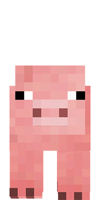

Pacíficos
Mobs pacíficos são criaturas inofensivas e pacíficas que não atacam o jogador, mesmo quando provocados, e geralmente fogem se forem provocados.
-

Galinha
(4 HP) -
Ovelha
(8 HP) -

Porco
(10 HP) -
Vaca
(10 HP) -

Aldeão
(20 HP)
Ofensivos
Mobs ofensivos são perigosos e agressivos que sempre atacam o jogador dentro de seus respectivos alcances de detecção.
-
Bruxa
(26 HP)
(6 AD) -

Creeper
(20 HP)
(25 - 73 AD) -

Esqueleto
(20 HP)
(2 - 5 AD) -
Invocador
(24 HP)
(6 AD) -

Zombie
(20 HP)
(2 - 4 AD)
Neutros
Mobs neutros às vezes são passivos e às vezes hostis ao jogador, alguns podem ser naturalmente hostis à provocação.
-

Aranha
(16 HP)
(2 - 3 AD) -

Enderman
(16 HP)
(4,5 - 10,5 AD) -

Iron Golen
(100 HP)
(4,75 - 32,25 AD) -

Lobo
(8 HP)
(3 - 6 AD) -

Piglin
(16 HP)
(1 - 12 AD)
Personagens Principais
Personagens jogáveis
-

Steve
(20 HP)
(1 - 3 AD) -

Alex
(20 HP)
(1 - 3 AD)